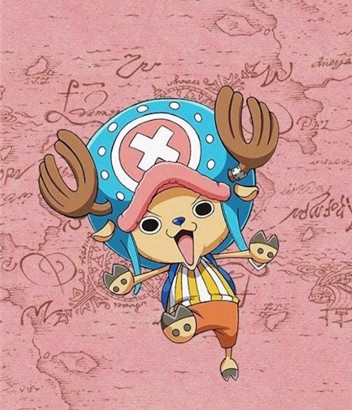

 원피스의 등장인물. 밀짚모자 일당의 선의. 몽키 D. 루피의 다섯번째 동료. 파란 코를 가진 사람사람 열매를 먹은 순록이다.[42] 즉 '순록 인간'이 아니라 '인간 순록(人間トナカイ)'이다. 어떤 병도 낫게 하는 만병통치약 같은 의사가 되는 것이 꿈이다. 세상에 낫지 않는 병은 없다고 굳게 믿고 뭐든지 고칠 수 있는 의사가 되기 위해서 노력하고 있다. 처음으로 자신의 아픈 마음을 보듬어준 돌팔이 의사 Dr. 히루루크를 세상에서 제일 위대한 의사라고 생각한다. 밀짚모자 일당이 위대한 항로에서 만난 첫 번째 동료이자 처음으로 영입한 악마의 열매 능력자다. 또한 일당 중에서 유일한 동물계 능력자이기도 하다. 웃음소리는 에헤헤.[43]